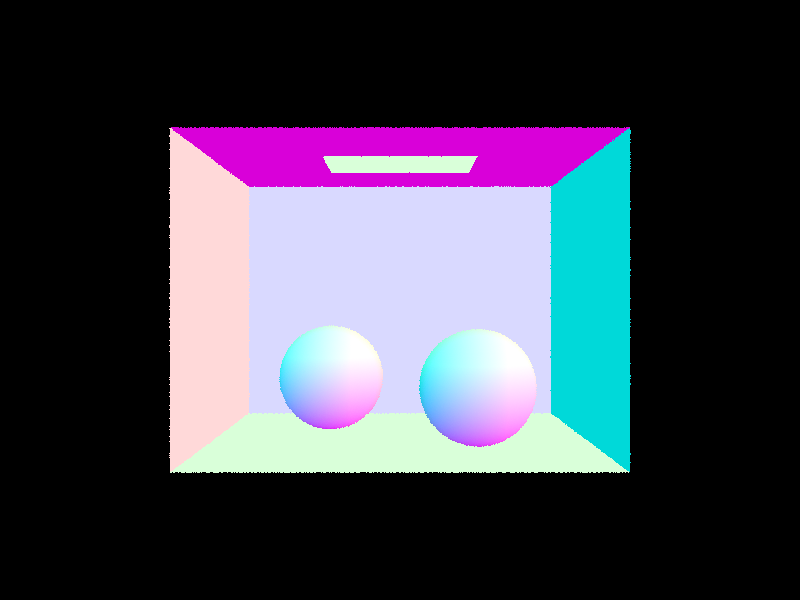
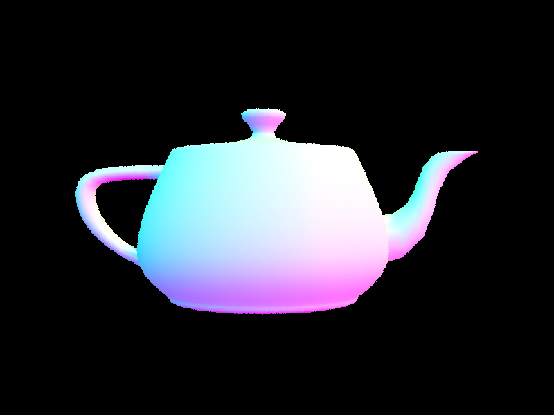

Empty

Spheres

Teapot

Banana
In this assignment, we implemented a physically-based path tracer capable of generating realistic images by simulating the complex interactions of light with surfaces. We began with the fundamentals of ray generation and scene intersection, designing robust algorithms for ray-primitive tests that serve as the backbone of our rendering pipeline, and then accelerated these computations using a Bounding Volume Hierarchy. Moving on to direct illumination, we compared uniform hemisphere sampling with importance sampling—demonstrating that by focusing samples on light sources, the latter significantly reduces noise and improves convergence. We further expanded our system to support global illumination by incorporating multiple light bounces with unbiased path termination via Russian Roulette, and concluded by introducing adaptive sampling to intelligently allocate more samples to high-variance pixels. This project deepened our understanding of light transport simulation and underscored the importance of efficient algorithms in producing high-quality, noise-free renderings.
This write-up is published on https://mjkwak0184.github.io/cs184/hw3/.
In this part, we implemented the ray generation and scene intersection parts of the rendering pipeline. The ray generation process involves creating rays from the camera through each pixel of the image plane. More specifically, we sample points on the final image plane and generate rays from the camera through these points. For each pixel, we generate the camera ray by transforming the normalized image coordinates to camera space, generating the ray in camera space, and finally transforming it into a ray in world space. We use this world space ray to trace the path of light through the scene.
This method is important in primitive intersection, where we determine whether a ray intersects with primitive objects such as
triangles and spheres in the scene. We implemented the ray-triangle intersection algorithm in the Triangle class
and the ray-sphere intersection algorithm in the Sphere class. These intersection functions test whether there is
an intersection between a primitive object and the input ray and report the location of the nearest intersection point.
For the ray-triangle intersection, we used the Moeller-Trumbore algorithm. This algorithm calculates the intersection point of a
ray with a triangle by computing the barycentric coordinates of the intersection point. We then use these barycentric coordinates
to interpolate the three vertex normals of the triangle to determine the surface normal at the intersection point. We return true
only if the intersection occurs at t that lies within the min_t and max_t of the input ray
and update max_t.
Empty
Spheres
Teapot
Banana
In this part, we implemented a Bounding Volume Hierarchy (BVH) to speed up our path tracer and render large .dae files more efficiently. A BVH is a binary tree that allows us to traverse the scene and quickly discard collections of primitives that a particular ray is guaranteed not to intersect. The BVH construction algorithm recursively divides the primitives into a "left" and "right" collection based on the centroid of their bounding boxes. We chose the split point along the axis that gives us the most benefit, such as the midpoint of an axis or the average of centroids along an axis. We then set the current node's left and right children by recursively calling the BVH construction algorithm. More specifically, we computed the bounding box of a list of primitives and initialized a new BVHNode with that bounding box. If there are no more than a specified maximum leaf size of primitives in the list, the node we just created is a leaf node, and we update its start and end iterators appropriately. Otherwise, we divide the primitives into a "left" and "right" collection based on the centroid of their bounding boxes and set the current node's left and right children by recursively calling the BVH construction algorithm.
We also implemented the BVH intersection functions to test whether there is an intersection between the input ray and any primitives in the input BVH.
The has_intersection function simply tests for intersection, while the intersect function not only tests for intersection but
also reports the nearest intersection via the input Intersection structure. We used these functions as helper functions for each other to
simplify our code. The BVH intersection functions recursively traverse the BVH tree and test the ray against every single primitive in the tree.
Once these functions are complete, our path tracer became fast enough to render any of our scene files in a matter of seconds. Here are some of the results:
Max Planck
Lucy
Blob
Dragon
In this part, we implemented direct illumination in our path tracer to simulate light transport in the scene and
render images with realistic shading. To that end, we first added zero bounce illumination, which refers to light
that reaches the camera without bouncing off anything in the scene. The zero_bounce_radiance function
works by returning the emission of the object that was intersected. Then we updated one_bounce_radiance,
which returns the direct illumination by hemisphere or importance sampling depending on the direct_hemisphere_sample flag.
These zero and one bounce radiance functions are then used in the est_radiance_global_illumination function to
return the direct illumination.
For hemisphere sampling, the estimate_direct_lighting_hemisphere function estimates the lighting from an intersection
by sampling uniformly in a hemisphere. We used this function to estimate how much light arrived at the intersection point from elsewhere
and calculate how much outgoing light there is.
The results from hemisphere sampling does converge, but they are quite noisy. To improve this, we implemented importance sampling
in the estimate_direct_lighting_importance function. In our implementation within this function, we sample only the
directions that point toward each light source. For every light, we generate a ray from the hit point toward the light and evaluate
its contribution using the material's BSDF, the cosine term (which accounts for the angle between the surface normal and the light direction),
and the probability density function associated with the light sampling. If the ray reaches the light without being blocked (indicating
that the point is not in shadow), its contribution is accumulated into the final lighting estimate. This approach reduces noise and
improves convergence because it allocates more samples to the most relevant parts of the scene.
Hemisphere Bunny 16/8
Hemisphere Bunny 64/32
Imporatnce Bunny 1/1
Importance Bunny 64/32
Importance Spheres 1 light ray
Importance Spheres 4 light rays
Importance Spheres 16 light rays
Importance Spheres 64 light rays
To test our results, we rendered the bunny scene with different sample rates. The images above show the bunny scene rendered using hemisphere and importance sampling at different sample rates. Looking at the results, we can see that importance sampling produces less noise and more accurate soft shadows compared to hemisphere sampling. The walls in the render using hemisphere sampling are speckly, whereas they are perfectly smooth in the render using importance sampling. This difference is due to the inherent randomness in hemisphere sampling, which can lead to higher variance in the calculated light levels between adjacent pixels. In contrast, light sampling only casts rays toward light sources, resulting in a smoother blend of lighting as we move our eyes across the wall. This also explains why the hemisphere-sampled images look darker overall, as not every sample contributes direct light. In contrast, importance sampling directs rays toward the light sources, guaranteeing that each sample has a high probability of gathering meaningful light information. As a result, the images rendered with importance sampling are much smoother and brighter, with less variation across adjacent pixels. Another notable discrepancy is the halo that appears around the sides of the area light in the hemisphere-sampled render, which does not manifest in the importance-sampled version. By focusing sampling on the areas that contribute the most to the final illumination, importance sampling produces more accurate, noise-free results even with fewer total samples.
For indirect lighting, we implemented at_least_one_bounce_radiance, which recursively traces light paths to capture global illumination. First, we transform the ray’s direction into the local coordinate frame of the intersected surface and initialize the outgoing radiance (L_out). If isAccumBounces is enabled, or if the current bounce is the final one, we add direct illumination from one_bounce_radiance to L_out. If the ray’s depth is greater than 1, we sample an incoming direction (wi) using the BSDF’s sample_f function, ensuring that reflections follow a cosine-weighted hemisphere distribution. We then compute the probability density function (pdf) and verify that wi contributes valid radiance. If the sampled direction has a valid cosine weight, we create a new ray originating slightly off the surface (to avoid self-intersection) and trace it recursively. To account for energy conservation, we divide by pdf and scale by the cosine term. If Russian Roulette termination is applied, the recursion randomly stops early based on a probability threshold, and we adjust the weight of the remaining paths accordingly. This ensures that longer paths are sampled correctly without introducing bias while improving efficiency. Finally, L_out accumulates all contributions, resulting in a more realistic rendering of indirect light.
bunny
wall-e
direct bunny
indirect bunny
false 0 bunny
false 1 bunny
false 2 bunny
false 3 bunny
false 4 bunny
false 5 bunny
the 2nd bounce reveals initial soft indirect lighting and subtle shadows while the 3rd bounce further diffuses light to enhance global illumination detail, emphasizes on shadows. Together, they yield a more naturally lit (however, with 3rd bounce alone, it is darker of course) and depth-rich image compared to the flat, direct lighting typical of rasterization.
true 0 bunny
true 1 bunny
true 2 bunny
true 3 bunny
true 4 bunny
true 5 bunny
bunny 0
bunny 1
bunny 2
bunny 3
bunny 4
wall-e 1
wall-e 4
wall-e 64
wall-e 1024
Adaptive sampling helps reduce noise in rendered images by focusing more samples on difficult areas while stopping early in areas that converge quickly. Instead of using a fixed number of samples per pixel, we implemented a loop that checks pixel convergence every samplesPerBatch iterations. For each sample, we traced a ray through the scene, estimated its radiance, and updated running sums for the mean and variance of illuminance. After every batch, we computed a confidence interval to see if the pixel had stabilized—if it had, we stopped sampling early. This approach improves efficiency by reducing unnecessary computations while maintaining image quality. Finally, we stored the total number of samples per pixel to visualize the sampling rate across the image.
Here are two images rendered with adaptive sampling: We present the sampling rate image and the final rendered image side by side.
Bench
Bench sampling rate
Blob
Blob sampling rate